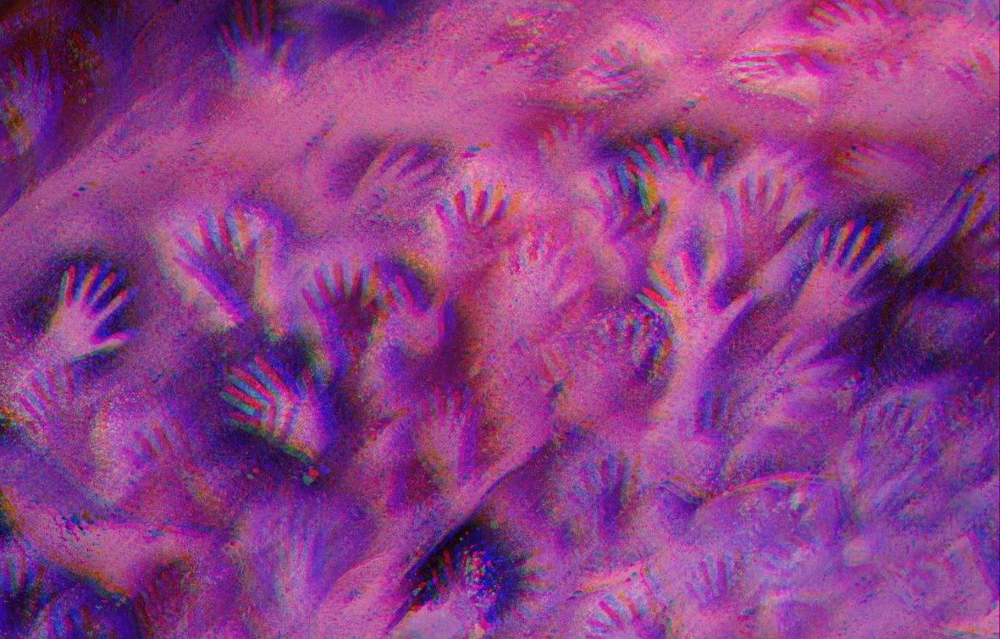

Crafting an Aesthetic, CSS, and Speculation
I think of html as the part of a web page where you gather and place what you need onto a page. Text, images, video, links, all compiled into one file delicately placed into containers nested within each other. A section of a page holds a headline, a subheader, and a body of text with images to display. There is order and there is organization, it is logically organized for the web page's personal needs. So, as a gatherer of information, you hold the power to provide the web page with the content needed to make your web page grow and come alive.
html is like building the frame and foundation of a house
css is like painting and decorating each room of your home
if the internet was a living environment, what do you want it to look like?
Homework: Digital Cave Paintings 
Cueba de las Manos is a cave complex of rock art sites, known for its paintings of stenciled hand paintings on the rock walls. Lets make our own digital cave painting to create the cover of our webzine. Your task is to create an image that embodies your essence. This does not mean that you need to use any imagery of a hand (you can if you want to though), rather think of it as a digital print of yourself. Once you make the image, you will practice what we learned in class by uploading to github by adding your image to the images folder and editing the webzine index.html and styles.css to position your image on to the digital cave wall. Please size your image to a reasonable size as to leave enough room for your peers.
Add anymore styling to your "Welcome to my Homepage" if you want to apply any more CSS after todays class.